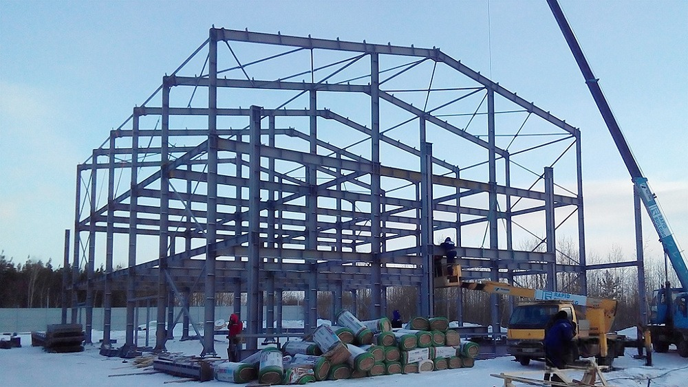
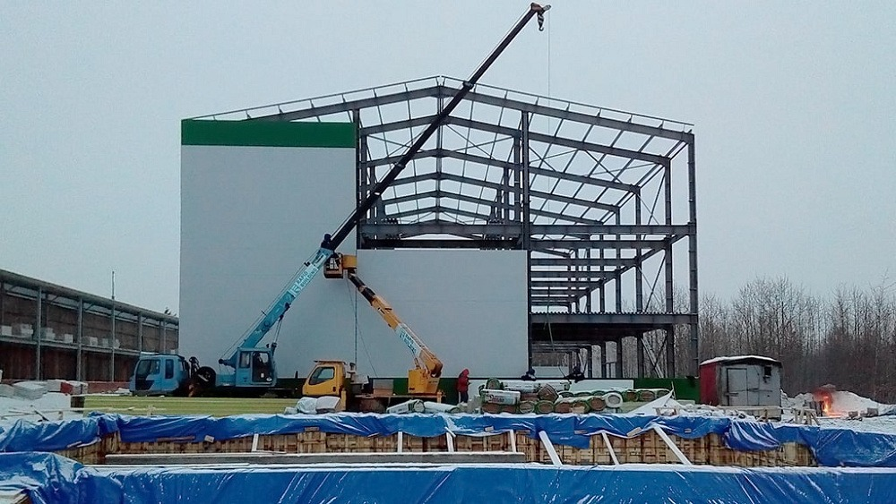
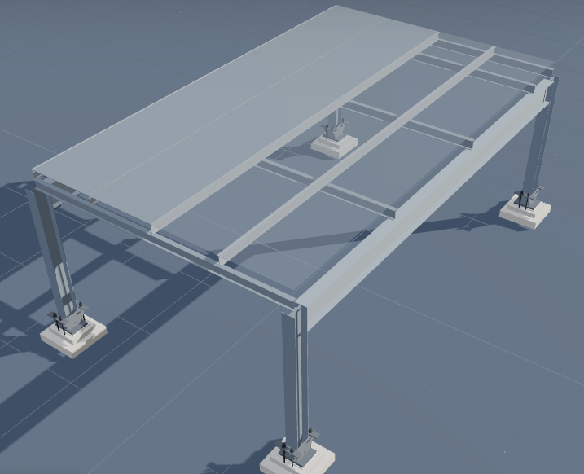
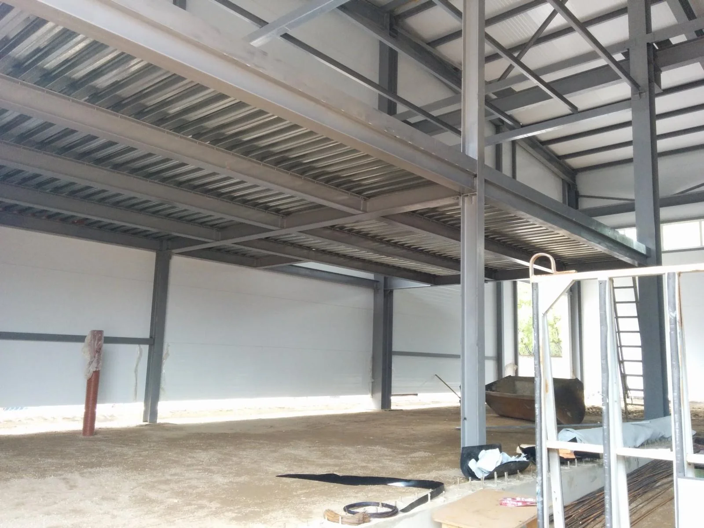

А что собственно то нужно делать?
Нет реально, что?
Ну, вообще говоря, вам нужно запроектировать что-то типа того, что представлено на рис. 1. То есть некое промышленное здание с каркасом из металла, состоящим из одних только балок и колонн, без ферм.

Такое здание может служить складом или гаражем для транспорта. Может быть разной высоты и разной этажности, в зависимости от задачи. Снаружи здание закрывается какими-нибудь сэндвич-панелями (Рис. 2).

В целом это выглядит так, что к вам приходит заказчик и говорит: «Мол, ему нужно здание для хранения, скажем, стройматериалов в таких-то объёмах, стоять будет на территории такой-то площади, бюджет на всё про всё такой-то». Дальше вы прикидываете размеры здания, его высоту, этажность. Подсчитываете, какие будут нагрузки от хранимых материалов, от рабочих, от снега, от ветра. Рассчитываете, какие нужны сечения для профилей балок, из которых всё будет сделано. Смотрите, что реально приобрести и сколько это будет стоить. Думаете, что можно изменить в конструкции, как переделать, чтобы уложиться в бюджет. Делаете окончательные расчёты, проверяете выполнение всех условий.
Но вы то делаете просто университетскую курсовую работу. Так что у вас всё сильно проще. В этой курсовой вы вообще ничего не проектируете. Вам уже даны размеры, способы крепления деталей, приложенная нагрузка. К вас только один первый этаж. Да и вообще вы, по сути, расчитываете только одну секцию из четырёх колон и двух главных балок, расположенную по средине здания (Рис. 3).


Короче говоря там делов то. Вам просто надо подобрать сечения всех элементов, а также расположение кое каких дополнительных элементов. При этом цена не важна, сложность сборки не интересует. Подбор параметров конструкции зависит только от условий прочности и устойчивости. Что это ещё за условия такие?
ЭТО УСЛОВИЯ НЕСУЩЕЙ СПОСОБНОСТИ!
Эти условия делятся на две так называемые "Группы предельных состояний".
Если вы хотите узнать поподробнее, что это за группы такие, как с ними работать и как определять выполнение условий, нажмите на соответствующую кнопку. Если же вы эти группы на завтрак едите, изи тема, всё и так понятно, то пропускайте пункты и читайте дальше.
Что входит в курсовую работу
- Выбор и обоснование компоновки балочной клетки.
- Расчёт стального настила на прочность и жёсткость.
- Подбор сечения балки настила.
- Подбор сечения главной балки.
- Расчёт и конструирование колонны.
- Расчёт сварных и болтовых соединений.
- 3D-модель перекрытия и пояснительная записка.
Порядок работы
-
Изучите задание
Выпишите пролёт главных балок, шаг балок настила, число пролётов, временную нагрузку, отметку верха настила и марку стали. Сразу проверьте единицы измерения: кПа и кН/м² — это одно и то же, а миллиметры и сантиметры лучше не смешивать в одной таблице.
-
Выберите компоновку балочной клетки
Определите тип клетки — нормальная или усложнённая, — число и шаг главных балок, направление балок настила и сопряжения. Откройте 3D-сборку и проверьте, что выбранная схема читается: балки не пересекаются, пролёты соответствуют заданию, отметка перекрытия выдержана.
Открыть 3D-сборку → -
Подберите стальной настил
Настил работает на изгиб между балками настила. Задайте пролёт, нагрузку и предельный прогиб, подберите толщину листа. Для предварительной оценки удобно использовать приближённую формулу отношения пролёта к толщине, а затем проверить напряжения и прогиб по теории Тимошенко.
Перейти к расчёту настила → -
Рассчитайте балку настила
Соберите нагрузку с грузовой полосы шириной, равной шагу балок настила. Определите максимальные момент и поперечную силу, требуемый момент сопротивления и подберите прокатный профиль по сортаменту. Не забудьте проверить прогиб и при необходимости принять следующее сечение.
Перейти к расчёту балки настила → -
Рассчитайте главную балку
Передайте на главную балку сосредоточенные силы от балок настила и собственный вес. Постройте расчётную схему, найдите максимальные момент и поперечную силу, подберите сечение — прокатное или сварное. Проверьте прочность, жёсткость и общую устойчивость.
Перейти к расчёту главной балки → -
Рассчитайте колонну
Соберите продольную силу от главных балок, задайте расчётную длину и гибкость. Подберите площадь сечения и проверьте устойчивость с учётом коэффициента продольного изгиба. Для внецентренно сжатой колонны дополнительно учитывайте изгибающий момент.
Перейти к расчёту колонны → -
Рассчитайте узлы
Для опорных и монтажных узлов определите усилия, задайте катет сварного шва или диаметр болтов и проверьте несущую способность соединения. Отдельно проверьте прикрепление балки настила к главной балке и главной балки к колонне.
Перейти к расчёту узлов → -
Оформите пояснительную записку
Соберите исходные данные, обоснование компоновки, расчётные схемы, эпюры, подбор сечений и проверки. Добавьте чертежи, спецификацию элементов и список использованной литературы. В тексте ссылайтесь на пункты норм, по которым выполнены проверки.
Как работать с калькуляторами
- Сначала выберите марку стали — от неё зависят расчётные сопротивления и модуль упругости. Значения σт и σв смотрите в таблице механических характеристик, а размеры и геометрические характеристики профиля — в сортаменте двутавров.
- Вводите данные в тех единицах, которые указаны рядом с полем; калькулятор сам пересчитывает промежуточные величины.
- Сравните результат с требованием норм. Если условие не выполняется, измените толщину, пролёт или сечение и повторите расчёт.
- Записывайте промежуточные значения — они понадобятся для пояснительной записки и проверки в 3D-модели.
- Округляйте сортамент до ближайшего большего значения по ГОСТ, а не до ближайшего по математике.
Частые ошибки
- Нагрузка собрана с шага балок, а не с грузовой площади.
- Не учтён собственный вес настила, балок и колонн.
- Сечение подобрано по моменту сопротивления, но не проверена жёсткость.
- Для колонны не выполнена проверка устойчивости.
- Перепутаны единицы: кПа и кН/м², миллиметры и сантиметры.
Готовы начать?
Откройте 3D-сборку, выберите компоновку и переходите к первому этапу расчёта.